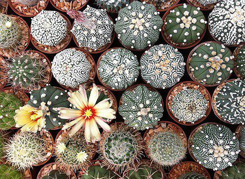

Астрофитум

Это очень красивые и необычные кактусы. Они отличаются крепким, мясистым, шаровидным
или слегка удлинённым стеблем. Некоторые виды совсем не имеют колючек и выглядят сверху
как 4-8 лучевые звёзды (отсюда и название: aster-звезда). Красоту некоторых видов усиливают
белые точки на стебле разных размеров, а также шелковидные жёлтые цветки, появляющиеся в
центре стебля в сравнительно раннем возрасте. Несмотря на все эти достоинства, содержание
астрофитумов нельзя назвать лёгким. И, хотя опытный кактусист в состоянии выращивать их
на собственных корнях, более безопасным считается выращивать их в привитом состоянии.